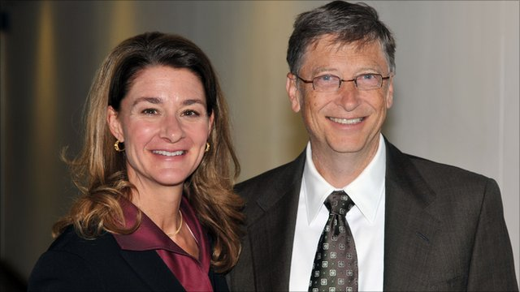

Bill Gates is a technologist, business leader, and philanthropist. He grew up in Seattle, Washington, with an amazing and supportive family who encouraged his interest in computers at an early age. He dropped out of college to start Microsoft with his childhood friend Paul Allen. He married Melinda French in 1994 and they have three children. Today, Bill and Melinda Gates co-chair the charitable foundation bearing their names and are working together to give their wealth back to society.
Bill Gates
an American business magnate, philanthropist, investor, and computer programmer
 Top 4 business lessons we can learn from Bill Gates
Top 4 business lessons we can learn from Bill Gates
Here's a time line of Bill Gate's life:
- 1955 - Born in Seattle, Washington
- 1967 - Enrolled in the Lakeside School, a private preparatory school. First used computer.
- 1968 - Began programming with Paul Allen in the computer center.
- 1975 - Dropped out of Harvard. Started Micro-Soft with Paul Allen in Albuquerque, New Mexico.
- 1976 - Changed company name to Microsoft.
- 1979 - The company moved from Albuquerque to its new home in Bellevue, Washington.
- 1985 - Microsoft launched its first retail version of Microsoft Windows.
- 1995 - Windows 95 launched.
- 2008 - Left his daily job at Microsoft.
- 2010 - Bill and Melinda challenged the global health community to declare this the Decade of Vaccines. They pledged $10 billion over the next 10 years to help research, develop, and deliver vaccines for the world's poorest countries.
- 2013 - Bill helped launch a $5.5 billion effort to eradicate polio by 2018. India was certified polio-free by the World Health Organization, leaving only three countries that have never been free of the disease.
- 2014 - Stepped down as chairman. Remained on the board and began serving as technology advisor.
The way to be successful in the software world is to come up with breakthrough software, and so whether it's Microsoft Office or Windows, its pushing that forward. New ideas, surprising the marketplace, so good engineering and good business are one in the same.

Melinda and Bill Gates